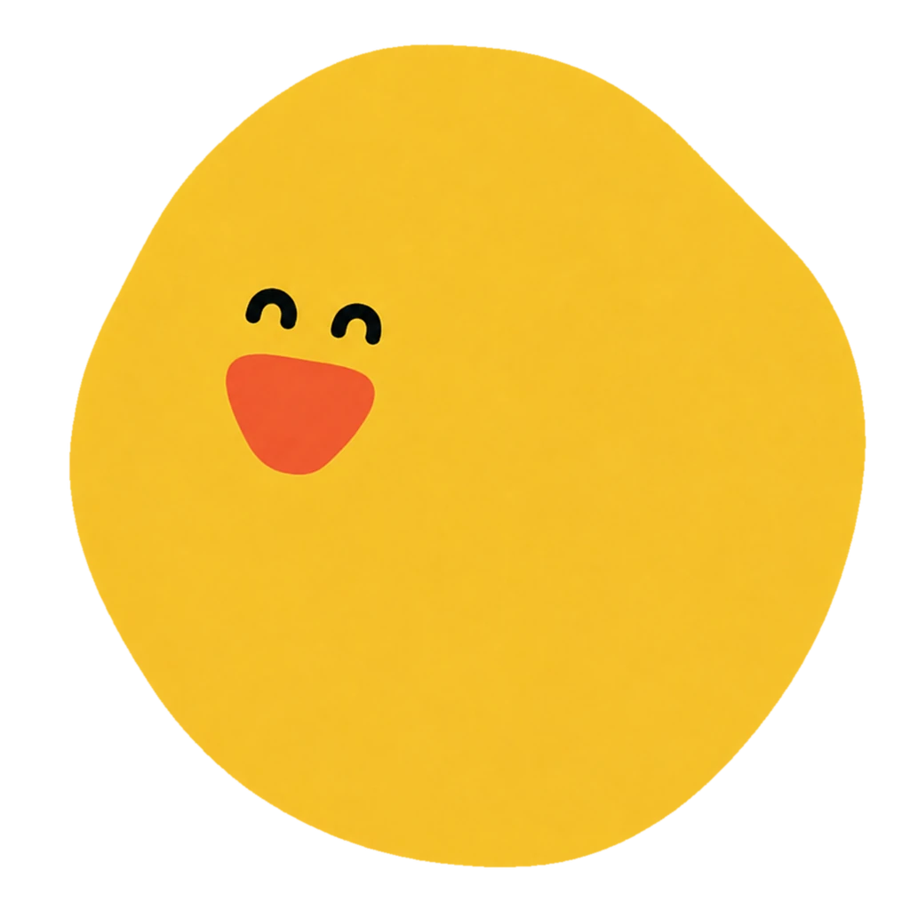
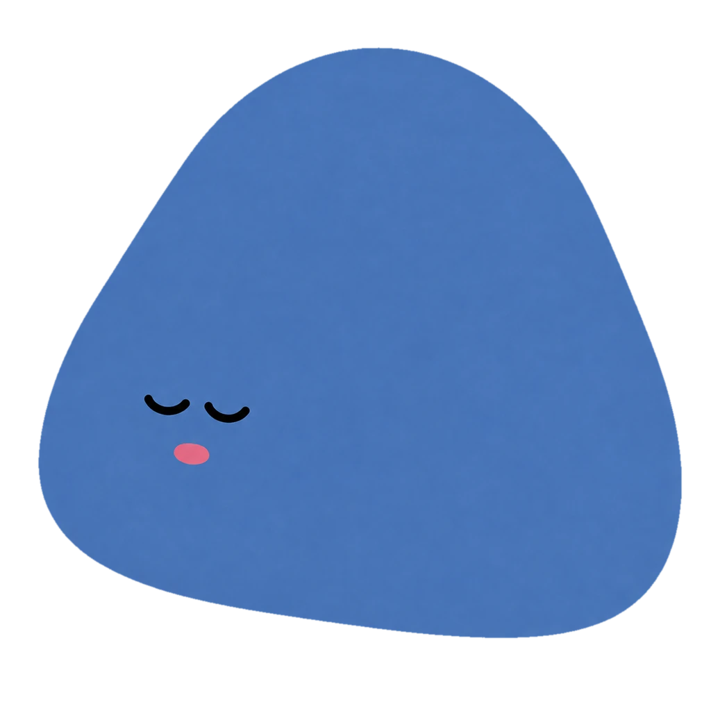
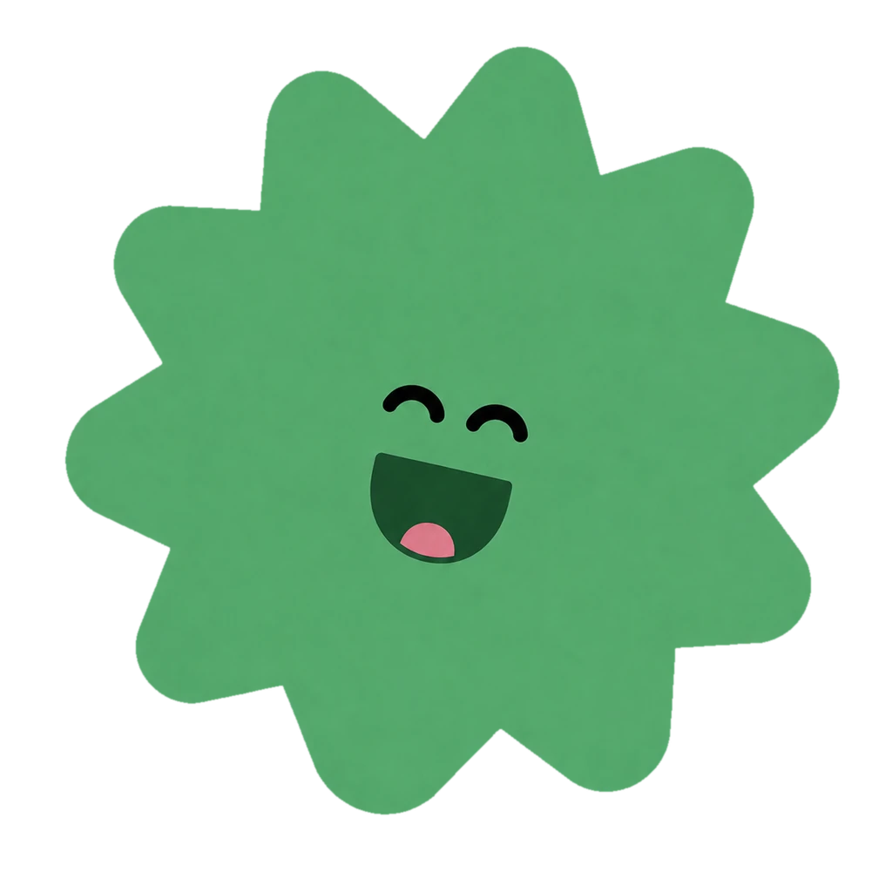

희 · 기쁨

기쁨을 포착하다
기쁨에 짧은 이름을 붙이고 여덟 장을 촬영한 뒤, 네 장을 골라 네 컷과 GIF로 남깁니다.
01 / 작품 개요
〈감정을 마주하다 — 희로애락〉은 감정을 단순히 설명하거나 평가하지 않습니다. 관람객이 카메라와 마우스, 키보드, 몸짓을 사용해 감정을 직접 움직이고 사진, 파편, 문장, 소리의 형태로 변환하는 인터랙티브 웹 경험입니다.
02 / 감정 구성

기쁨에 짧은 이름을 붙이고 여덟 장을 촬영한 뒤, 네 장을 골라 네 컷과 GIF로 남깁니다.

달아나는 캐릭터를 붙잡고 마음에 걸린 말을 꺼낸 뒤, 하나의 파일로 만들어 파쇄합니다.

마음에 머무는 문장을 꺼내 잠시 바라보고, 캐릭터와 네 번의 호흡을 함께하며 천천히 흘려보냅니다.

음악을 고른 뒤 몸을 움직이고, 음악이 멈추는 다섯 순간의 자세를 카메라로 남깁니다.
03 / 경험 구조
짧은 질문과 문장을 통해 지금 나와 가까운 감정을 떠올립니다.
각 감정에 맞는 신체적 인터랙션으로 감정의 움직임을 경험합니다.
사진, 파편, 잔상, 소리처럼 서로 다른 결과를 바라보고 경험을 마무리합니다.
04 / 전시 안내
분노와 슬픔에 입력한 문장은 서버로 전송되지 않습니다. 희의 사진과 GIF는 결과물 및 QR 생성을 위해 클라우드 저장소에 업로드됩니다. 전시 전 보관 기간과 삭제 정책을 명확히 안내합니다.
희와 락은 카메라 권한이 필요합니다. 카메라는 사진 촬영과 손동작 인식에만 사용되며, 관람객이 경험을 종료하면 촬영 스트림을 중지합니다.
다음 화면에서 희·로·애·락 중 하나를 선택해 경험을 시작합니다.